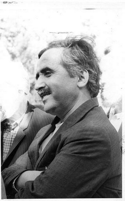

Mustafa Sungur (1929 - ...)

Bediüzzaman’ýn önde gelen talebelerindendir. Uzun süre kendisinin hizmetinde bulunmuþtur. Ýlerlemiþ yaþýna raðmen 1946 yýlýndan bu yana Risâle-i Nurlarý ayný aþkla okuma ve yayma hizmetine devam etmektedir. Bediüzzaman’ýn mânevî evlâdýdýr. Mustafa Sungur, 1929 yýlýnda bugün Karabük’e baðlý olan Eflani’de doðdu. Uzun yýllar burada kaldý. Ýlkokulu burada okudu. Daha sonra Kastamonu Gölköy’de bulunan Köy Enstitüsüne kayýt oldu. Okulda çalýþkanlýðýyla dikkat çekti. Öðrenciliði boyunca çok sayýda kitap okudu.Köy Enstitülerinde dine karþý takýnýlan olumsuz tavra raðmen, dine meyilli olan Mustafa bu eðilimini devam ettirdi. Aile büyüklerinden de gördüðü destekle mânevî yönünü takviye etmeye çalýþtý. Köyünde bulunan Ýbrahim Hoca’dan dînî dersler aldý. Enstitüden mezun olduktan sonra eðitimine devam etmek istedi. Amacý, yüksek tahsil yapýp öðretmen veya müfettiþ olmaktý. Ancak, babasý buna izin vermedi.
Mustafa Sungur, köy enstitüsünden mezun olduktan sonra, köyde öðretmenlik yapmaya baþladý. Öðrenciliði sýrasýnda bilgi sahibi olmaya baþladýðý Bediüzzaman ve Risâle-i Nur’u, bu öðretmenliði sýrasýnda, Emirdað Lâhikasý’nda “Hafýz Ali’nin tam varisi” olarak vasýflandýrýlan ve ismi çok zikredilen Ahmet Fuat Efendi ile Safranbolulu Keçeci Mehmet Efendi vasýtasýyla 1946 yýlýnda tanýdý. Çalýþlar Köyü’nde öðretmenliðini sürdürürken Bediüzzaman Said Nursî’yi ziyaret etti.
Mustafa Sungur’a önce Þemsettin Yeþil’in kitaplarý verilir. Bilindiði gibi bu kitaplarda Risâle-i Nur’dan kaynak gösterilmeden alýntýlar yer almaktaydý. Ýntihal yazýlarý öðrenen Bediüzzaman Hazretleri buna bir þey dememiþti. Bir toplantý için Safranbolu’ya giden Mustafa Sungur, burada bulunan Hüsnü Bayram’ýn babasý olan Hýfzý Bayram Efendi’yle tanýþtý. Hýfzý Bey kendisine formalar halinde bazý yazýlar verip okumasýný söyledi. Verilen formalar, Risâle-i Nur’dandý. Bediüzzaman’ýn eseri olduðunu öðrendi. Böylece Safranbolu’da hem Risâle-i Nur, hem de talebeleriyle tanýþmýþ oldu.
Risâle-i Nur’u tanýyýp Bediüzzaman Hazretleri hakkýnda bilgi sahibi olan Mustafa Sungur, talebe olmak için büyük bir heyecan yaþamaktaydý. Daha önceden yaþadýklarýný da ara sýra dile getirerek Bediüzzaman’a mektuplar yazmaya baþladý. Bu mektuplardan bazýlarý lâhikalarda yerini aldý. Heyecanla talebeliðe kabulünü beklerken, Bediüzzaman’ýn gönderdiði mektupta kendi ismi de zikredilmekteydi: “Nurun küçük kahramanlarýndan Mustafa Sungur ve Rahmi’nin az bir zamanda eski harfle, Mustafa Sungur’un gayet mükemmel, Meyve’nin 11. Meselesi Hatimesi ile Rahmi’nin Gençlik Rehberi’ni eski harflerle güzelce yazmalarý ve Kastamonu’dan gelen kitaplarým içinde bize göndermeleri, hakikaten benim için yeni biraderzadelerim bir Abdurrahman ve Fuad dünyaya gelmiþ gibi beni memnun ediyor.” Bu ifadeler kendisi için çok büyük deðer taþýmaktaydý.
Mustafa Sungur, Bediüzzaman Hazretlerini görmek için 1947 Eylül’ünde teþebbüse geçti. Yol masrafý için gereken parayý borç edindi. Çalýþlar Köyü’nden atla önce Eflani’ye, oradan da 7-8 saat süren bir yolculuktan sonra Safranbolu’ya gitti. Buradan Karabük’e ve yorucu bir tren yolculuðundan sonra Ankara’ya vardý. Ankara’dan Eskiþehir’e yine trenle gitti. Buradan da Emirdað’a hareket etti. Günlerce süren yolculuktan sonra Bediüzzaman ile görüþme þansýný elde etti. Bediüzzaman; evli olup olmadýðýný sordu. Ancak, daha önceden evlenmiþti. Bekâr olsaydý yanýna alacaðýný söyledi. “Ceylan bir Sungur, Sungur bir Ceylan” diyerek iltifatta bulundu. Çünkü, Ceylan epey zamandýr kendisine hizmet eden önemli bir talebesiydi.
Bediüzzaman’ýn talebelerinin kaldýðý evde bir gece kalan Mustafa Sungur ertesi gün oradan ayrýldý. Ayrýlmadan önce Bediüzzaman kendisine 25 kuruþ para gönderdi. Buradan ayrýlýp Isparta’ya gitti ve buradaki talebelerle de tanýþma fýrsatýný elde etti. Isparta’dan döndükten bir yýl sonra, Afyon dâvâsýnda (1948) Bediüzzaman’ýn tevkif edildiðini öðrendi. Babasýnýn imamlýk yaptýðý Aydýn Kasaplar Köyüne gitti. Bir süre burada kaldýktan sonra Afyon’a geçti. Afyon’a geldiðinde henüz mahkeme baþlamamýþtý. Bu arada Bediüzzaman ve talebeleri tutuklanmýþ, bir süre tutuklu kalan talebelerden bazýlarý serbest býrakýlmýþtý. Mahkeme günü Bediüzzaman Hazretleri ile görüþtü.
Dinî kitap okumak ve Bediüzzaman’la görüþmenin suç sayýldýðý o dönemde tutuklananlar kervanýna Mustafa Sungur da katýldý. O da tutuklanýp Afyon hapsine kondu. Bediüzzaman 20 ay, Ceylan Çalýþkan 3 yýl hapis alýrken, Mustafa Sungur’a da 6 ay hapis verilmiþti. Dört ay Afyon Hapishanesinde kaldýktan sonra serbest býrakýldý. Hapis cezasý aldýðý için memuriyetten de atýldý. O zaman yürürlükte olan kanuna göre on gün içinde Danýþtay’da dâvâ açma hakkýna sahipti. Ancak, dâvâ vekili kendisine bu sürenin 81 gün olduðunu söyleyince, dâvâ açmayý geciktirmiþ ve ancak, 65 gün sonra itiraz baþvurusunda bulunmuþtu.
Memuriyetten atýlan Mustafa Sungur bir süre, tahliye edilip serbest býrakýlan Bediüzzaman ve talebeleriyle birlikte kaldý. Ýlk defa uzun bir süre Bediüzzaman’ýn yanýnda kalmaktaydý (1949). Bu sýrada Mustafa Sungur’un babasý Mehmet Efendi, memuriyetten ayrýldýktan sonra yanýna gelmediði için oðlunu Bediüzzaman’a þikâyet etti. Bediüzzaman baba Ýmam Mehmet Efendi ile bir süre sohbet etti. Bu görüþmenin ardýndan Mustafa, babasýnýn yanýna gitti.
Aydýn’da bir süre babasýnýn yanýnda kalan Mustafa Sungur, buradan Ýstanbul’a geçti. Sebilürreþad’ý çýkaran ve daha önceden Bediüzzaman’a dost olan Eþref Edip’le görüþtü. Akabinde köyüne geri döndü. Ailesinin yanýna uðradý. Ev halkýyla helâlleþip tekrar Emirdað’a doðru yola çýktý. Ankara’ya varýnca Diyanet Ýþleri Baþkaný Ahmet Hamdi Akseki ile görüþtü. Görüþmede Baþkan, Bediüzzaman’dan övgü ile söz eder: “Ben dünyada Abdülmecid (Bediüzzaman’ýn kardeþi) gibi âlim görmedim… Üstadýn ilmi zaten hesaba girmez, vehbîdir…” Bu arada yayýnlanmak üzere Risâle-i Nur takdim edilir. Ancak, yayýnlatma iþi gerçekleþmez.
Mustafa Sungur, Bediüzzaman’ýn verdiði görev ve hizmetleri yerine getirmeye baþladý. Bu gaye ile çeþitli yerlere gönderildi. Emirdað ve Ankara arasýnda gidip geldi. Bu arada Danýþtay’da açmýþ bulunduðu dâvâ ile ilgili olarak bir davet alýr. Bediüzzaman Hazretleri kendisini küçük bir köye muallim olarak göndermek istemediðini söyler. Kendisi de dâvâ için Ankara’ya gider. Ancak, müracaatý gecikmiþ gerekçesiyle iþleme konmaz. Ankara’dan eli boþ olarak Emirdað’a döner.
Bediüzzaman bir süre sonra kendisini tekrar Ankara’ya gönderir. Diyanet Ýþleri Baþkanlýðý’nda çalýþan Osman Nuri Efendi’ye iletilmek üzere bir mektup verir. Bu görevlerin dýþýnda daha baþka bir çok alanda hizmet görür. Risâle-i Nur nüshalarýnýn çoðaltýlýp daðýtýlmasý iþinde de bulunur. Bediüzzaman, bir çok siyasî simaya da mektup yazarak talebeleriyle ulaþtýrýr. Baþbakan ve bakanlara mektuplar gönderir.
Mustafa Sungur Samsun’da neþredilen Büyük Cihad adlý gazeteye Ankara’dan yazýlar gönderir. Bu yazýlarýn neþrinden sonra dâvâ açýlýr ve 19 Þubat 1953 yýlýnda tutuklanýr. Bir süre Ankara’da hapis yatar. Hapisten çýktýktan sonra memleketi Eflani’ye gider. Buradan tekrar Isparta’ya Bediüzzaman’ýn yanýna gider. Askerlik hizmeti hariç, Bediüzzaman’ýn vefatýna kadar yanýnda kalarak hizmet eder.
Risâle-i Nur’u tanýdýðýndan beri hizmetini devam ettiren ve ilerlemiþ yaþýna raðmen iman hizmetini hâlâ sürdüren Mustafa Sungur’un adý Risâle-i Nur’un muhtelif yerlerinde geçmektedir. Bediüzzaman Hazretleri 1946-58-59 yýllarýnda birkaç kez yazdýðý vasiyetnâmesinde Mustafa Sungur’un da ismine yer vermiþ, kendisi için övgü dolu ifadeler kullanmýþ, “Sungur benim evlâd-ý mâneviyemdir” demiþtir.